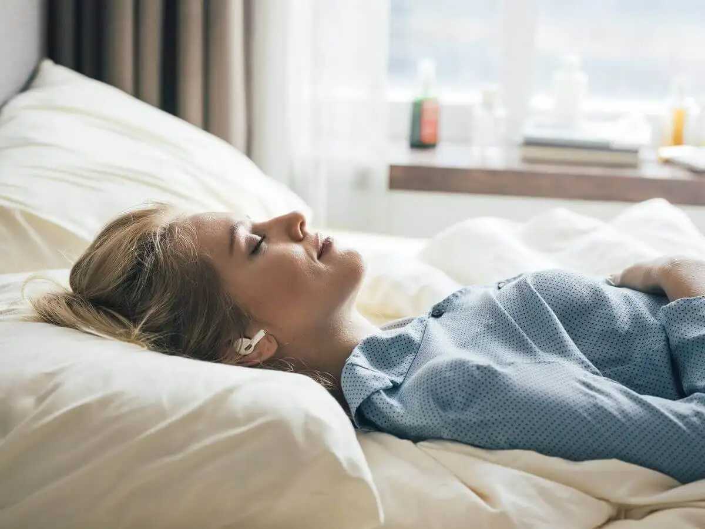

Consejos para Dormir Mejor

Establecer Rutinas
Dormir y despertar a la misma hora cada día.

Evitar Pantallas
Limitar el uso de dispositivos electrónicos antes de dormir.

Ambiente Adecuado
Mantener el dormitorio oscuro, silencioso y fresco.